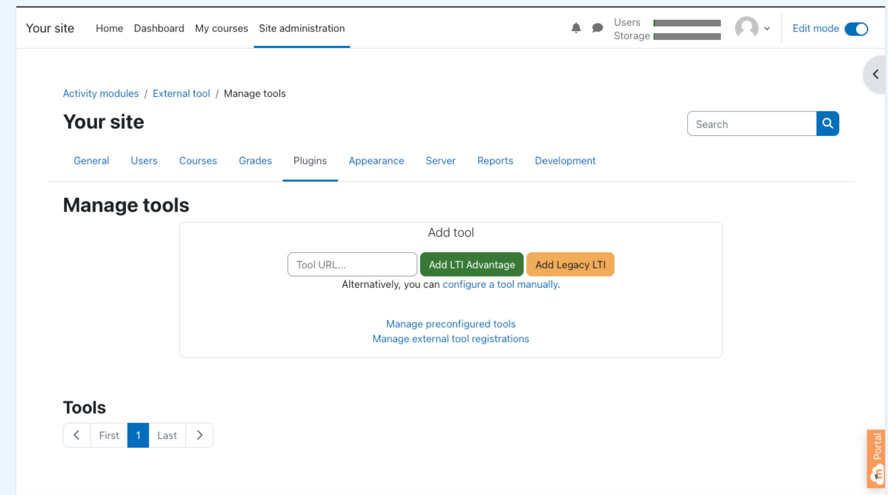
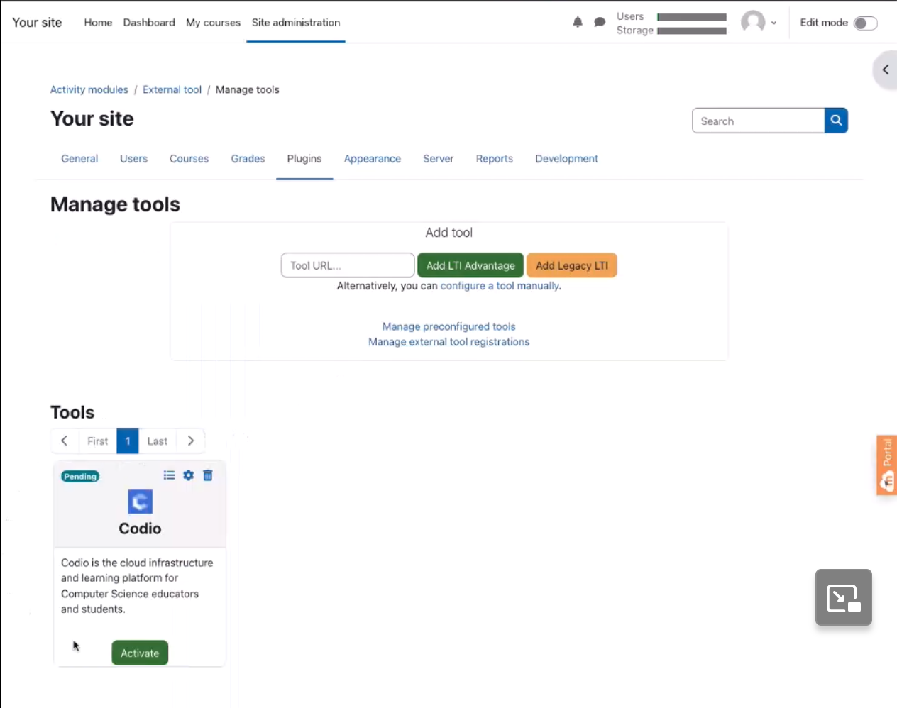

Moodle
Please be sure to check out the Codio LTI App which allows for an easy way to integrate and to map Codio course assignments to your LMS system. Moodle added support for LTI apps in version 2.2. The following page explains how to set up external apps in Moodle.
Setup and Configuration
Important
Codio needs the User Role, Email Address and Name of the Moodle user in order to work. It is important that you access the LTI security settings and ensure that these three fields are enabled. If they are not available, contact Moodle support who can help you enable this. If enabled after you have mapped Codio content to Moodle, you may need to re publish for the changes to be implemented.
Video: Connect Moodle to Codio using the LTI Integration URL
Common Cartridge
If using the Common Cartridge file you should first set up an External Tool in Moodle with the LTI Keys and URLs for your organization. Then in the Moodle course you have created:
Go to the course settings and Restore.
Select the .ismcc to upload it and proceed to restore.
Restore into this Course.
Proceed through the steps.
Note
Restore is required as Moodle currently does not support importing of .imscc files.
To confirm your setup, just click on any assignment available in Moodle. If all configurations are correct, you will be redirected straight to the Teacher view of that assignment in Codio.
Authentication and Account Creation
To add students/teachers see Users account creation
LTI 1.3 Dynamic Registration
Dynamic Registration simplifies the setup process by automatically sharing configuration information between Tools and LMS systems. For LMS platforms that are compatible with this standard, you can enable it by following these steps. For more information on how to find the values in Codio please visit Dynamic Registration .
Adding the Tool in Moodle
{kind=link}
Navigate to the Manage Tools section of your Site Administration and select the Plugins tab.
Paste the value you copied in the Tool URL field and click Add LTI Advantage.
It will present you with the Codio Organizations you are associated with, likely just one choice, but if there is more than one, select the organization you want to associate this tool with and click continue. It should be the organization that contains the courses you want to connect to the LMS system.
It will ask you to confirm that you want to register Codio as an external tool in the organization you selected. Click Yes. You will receive a confirmation from Codio that the action was completed.
The tool will appear at the bottom of the screen, click the Activate button.
Activating the Tool You are Creating

Return to Codio and refresh the Integrations page, you will see the integration you created in the bottom section if everything has been set up properly.
Using the Tool in Moodle

Navigate to your My Courses page and select the course you want to use.
Turn on Edit Mode.
From the More dropdown select LTI External Tools.
You will see the Codio tool, toggle Show in activity chooser on.
Go to your course and click on Add an activity or resource.
Click on the All tab to show all the tools and select Codio.
Click Select Content and that will bring up your list of Codio courses, select the course and assignment you want to connect.
LTI Version 1.3
LTI version 1.3 improves upon version [LTI-1.1] by moving away from the use of OAuth 1.0a-style signing for authentication and towards a new security model, using OpenID Connect, signed JWTs, and OAuth2.0 workflows for authentication.
For more information, see Learning Tools Interoperability Core Specification
The deep linking url is : https://apollo.codio.com/lti/resource_selection
How to Configure lti1.3 Tool in Moodle Manually
Connecting/Mapping Assignments in Moodle
There are a number of ways you can connect/map assignments. Check out the following videos to see the option that best suits you.
How to Connect Assignment by lti Integration url
How to Connect Assignment by Resource Selection Preview
How to Connect Assignment by Endpoint url
How to Connect Assignment with Custom Param
If you require any assistance, please dont hesitate to contact us